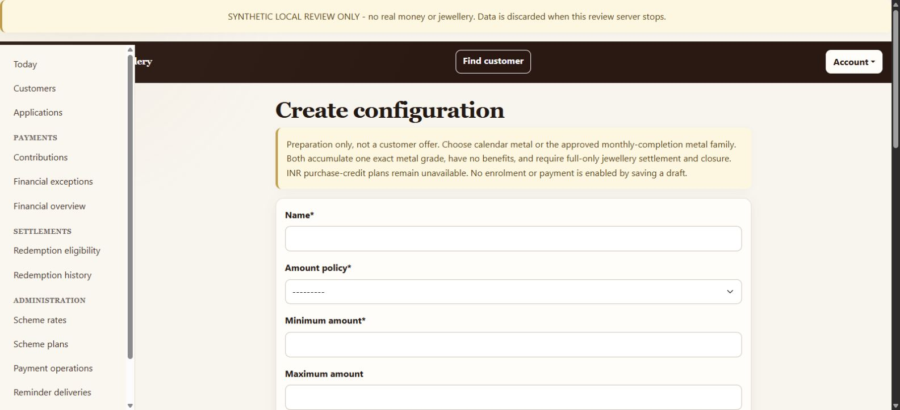
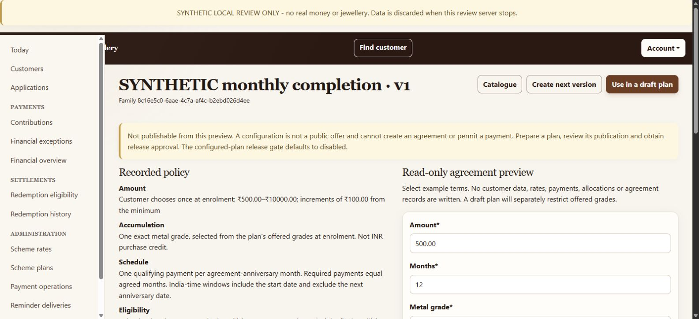
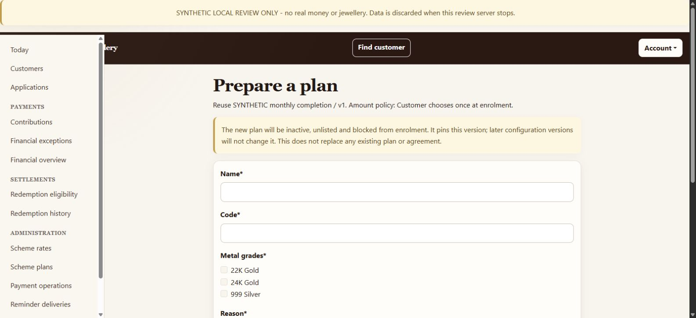
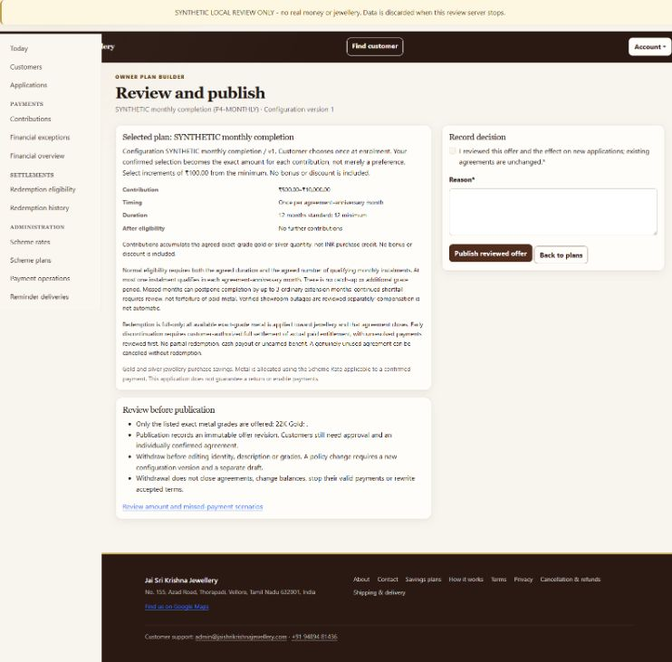

Your first useful plan
First distinguish what the customer owns: INR jewellery purchase credit or grams of one agreed metal grade. Then choose when contributions are due, what counts toward eligibility and whether a defined invoice benefit applies. Start without a benefit while learning; add only the supported rules the showroom intends to offer.
Owner’s job
Choose supported rules, preview them, prepare an offer, review publication, obtain customer confirmation and approve enrolment. Later, review exceptions and record actual jewellery delivery and permitted refund evidence.
System’s job
Validate compatible rules, retain immutable versions, freeze individual terms, enforce payment amounts and timing, preserve financial evidence, and prevent partial configured settlement.
Current preparation path: Scheme plans → Configuration catalogue → Prepare independent policy → Review configuration → Save immutable version → Use in a draft plan. Publication and enrolment require the separate release approval; a saved draft is not a live offer. The Earlier editor remains available for its narrower metal families and is illustrated separately below.
Do this first in the isolated review environment described in section 12. Do not create a real agreement just to learn the controls.
One customer, from offer to closure
This is the whole journey, not a checklist you must execute unaided. The developer verifies technical safeguards; the showroom operator practises recognising the customer, accepted terms, evidence and outcome. Start with a disposable customer and clearly labelled test references.
- Prepare, then review publication. Use the independent editor for the current policy families. Check the amount, accumulation, optional/required obligation, period basis, payment ceiling, eligibility, missed-payment outcome and separate benefit. A preparation-only or release-blocked offer cannot be made available by changing its wording.
- Customer asks to join. An approved customer reviews the available offer and submits an enrolment request. This request creates no scheme account, payment, rate lock or allocation. New customer access and enrolment are separate approvals.
- Owner approves the agreement. Check the customer, accepted publication revision, chosen amount, duration/count and exact grade if applicable. The resulting agreement starts with zero paid entitlement. Editing tomorrow's offer does not change these accepted terms.
- Record a real contribution through its proper channel. Online payments need verified capture. For money actually received at the showroom, use the in-store cash receipt workflow. Never record the same online payment again as showroom cash. INR credit records principal; metal contributions lock the applicable grade rate and record grams. Required instalment qualification is a separate timing check.
- Customer wants to finish or discontinue. Review their closure request, or assist with retained customer authorization. Accepting closure stops new collection and checkout resumption, but does not itself pay out or close the agreement. Resolve any in-flight payment, allocation or timing investigation first.
- Choose the correct final workflow. A genuinely unused agreement can be cancelled separately. A funded metal agreement settles all available exact-grade grams against jewellery. A funded INR agreement assigns all principal to the agreed net jewellery invoice and/or permitted original-source refund portions. Early closure does not invent an unearned benefit.
- Record actual fulfilment, then complete. A proposal is only an agreement about what will happen. Record each actual delivery/refund with its reference, date and customer receipt evidence. For INR, use Close fully fulfilled agreement only after every portion is completed and reconciled. For metal, the confirmed full-settlement action records fulfilment and closure together.
- Check the result. Confirm zero outstanding entitlement, completed agreement and retained statement/history. The customer can still log in and use other agreements. A correction appends new evidence; it does not erase the original settlement or automatically reopen collection.
Why the earlier test began at step 3: its two INR cases already had an accepted closure and saved proposal. They tested fulfilment safeguards, not plan creation or the whole customer journey. Use this walkthrough first; do not treat a passed technical test as proof that an operator has learned the process.
Configuration ≠ plan ≠ agreement
One configuration version can support several plans. A plan can produce many agreements. Each agreement retains its own accepted terms; a later offer edit does not rewrite it.
Example: Meena chooses ₹1,000 and Ravi chooses ₹2,000 from the same customer-fixed offer. Meena’s agreement requires ₹1,000 per contribution; Ravi’s requires ₹2,000. They do not share a balance, payment count or contract.
Saving a configuration, publishing a plan or approving enrolment creates no money, rate lock, metal allocation or earned benefit. Those are separate later events.
A validated builder, not unrestricted rules
Obligation, period basis, payment limit, eligibility and missed-payment outcome are separate controls. The editor validates their combination; it is not an unrestricted promise generator. The earlier editor described in this section prepares exact-grade metal with no benefits and full-only jewellery settlement. Read the independent-family update for the broader gated builder.
Subject to the release gate means implemented locally, not automatically available in production. Publication and enrolment still require the separate configured-plan release approval. Saving a configuration does not activate that gate.
| Dimension | Duration-based metal, optional contributions | Monthly-completion metal |
|---|---|---|
| Contribution amount | Showroom-fixed, customer-fixed or variable within limits | Customer chooses once at enrolment; then fixed |
| What accumulates | One exact gold or silver grade per agreement, not an INR purchase-credit balance | |
| Obligation | Optional contributions | Required instalments; count equals agreed months |
| Period basis | No compulsory instalment windows | Calendar month including enrolment month, OR agreement-anniversary month |
| Payment limit | Flexible frequency, or at most once per calendar month | At most one qualifying instalment per selected monthly period |
| Normal eligibility | Agreed calendar duration; no required paid-instalment count | Agreed duration AND required qualifying count AND end of final qualifying period |
| Missed payments | No mandatory-instalment penalty | Up to 3 ordinary extension months; continued shortfall goes to review |
| Benefits and fulfilment | No bonus or discount. Full exact-grade jewellery settlement and agreement closure; no partial redemption or cash payout | |
Three amount choices
- Amount fixed by the showroom: every customer uses the specified amount. Set minimum, maximum and fixed amount to the same value; leave Amount step blank.
- Customer chooses once at enrolment: the customer selects an allowed amount. It becomes a contractual amount, not a preference that may vary next month.
- Variable amount within limits: each contribution may differ, but must respect the snapshotted limits and increment. Currently available only with optional contributions and duration-based eligibility.
An increment is measured from the minimum. Minimum ₹500 and step ₹100 permits ₹500, ₹600, ₹700 …; ₹550 is rejected. Leaving Maximum amount empty means no configured upper bound, not an assurance that payment-provider or other operational limits disappear.
Not available through this earlier editor: INR purchase-credit accumulation, cash-bonus or discount plans, automatic forfeiture/disqualification of paid metal, anytime-redemption families, arbitrary catch-up/grace rules, partial redemption, or customer-authored configurations. An early authorised exit is not an “anytime” plan.
This earlier configuration format has a minimum duration of 12 months; independent policies do not inherit that default. Default months is a suggested duration, not the maximum; the individual agreement records the confirmed duration. A plan offering several grades still gives each agreement exactly one selected grade.
The complete builder: separate rules, one final closure
Preparation and review only. The screenshots and hands-on editor below describe the earlier metal-only configuration format. They do not activate the newer independent-policy families. The full builder remains behind release controls until its complete lifecycle, owner review and deployment acceptance pass. Opening a read-only policy or progress page does not permit a payment.
| Family | When normal full settlement becomes eligible |
|---|---|
| Optional contributions, duration-based | Agreed duration reached |
| Optional contributions, anytime | Positive verified entitlement exists |
| Required monthly contributions, count-only | Required qualifying instalments completed |
| Required monthly contributions, duration + count | Both conditions satisfied |
| Monthly contributions required for a benefit | Duration governs principal eligibility; compliance governs the named benefit |
All families require positive verified entitlement for settlement, customer authorization and cleared operational holds. Count-only requires the final payment to be verified and attributed; duration + count also respects the final qualifying period end. Optional windows create no missed-instalment debt. Required count completion allows three ordinary replacement periods, then review; a benefit-only schedule may disqualify its named unearned benefit, never paid principal or silently extend principal maturity.
Each family supports exact-metal accumulation or INR jewellery purchase credit, with compatible amount, scheduling and benefit choices. Optional contributions may be showroom-fixed, customer-fixed or variable; required instalments need a fixed amount. Period ceilings can use calendar or agreement-anniversary months. Exact-metal policies can have no benefit or a defined VA discount; INR purchase credit can also have a defined purchase bonus. Qualification, caps and missed-payment consequences must be explicit and compatible.
How many configurations can we create?
The compatibility validator enumerates 268 valid categorical policy combinations, holding numeric values constant (28 October 2026). This count includes calendar versus anniversary periods, benefit choices and whether contributions may continue after eligibility. It excludes different amounts, durations, instalment counts, percentages, caps and offered grades, so 268 is not a limit on configurations or plans. This is a count of valid rule shapes, not a claim that all are currently published or release-approved.
A configuration defines the immutable rules; a draft plan presents an offer using those rules. Multiple offers can reuse a configuration. New policy terms require a new version; existing agreements retain their accepted terms.
Prepare a new independent configuration
- Open Scheme plans → Configuration catalogue → Prepare independent policy. The earlier editor remains a separate option; it cannot silently convert an old agreement.
- Choose accumulation and amount rules. For a showroom-fixed amount, minimum, maximum and fixed amount must match. Required instalments cannot use variable amounts.
- Choose obligation, payment ceiling and period basis independently. Required instalments need one qualifying payment per period. Optional monthly ceilings create no compulsory schedule.
- Select eligibility and fill only its applicable duration/count fields. For example, 18 duration months and 12 qualifying payments are distinct conditions. Count-only or anytime must leave duration blank.
- For count completion use three ordinary replacement periods then review. A duration-only compulsory schedule must instead name the unearned benefit affected by missed payments; paid principal is never forfeited.
- Choose no benefit, a qualifying INR purchase bonus, or VA discount with a percentage and cap. A VA discount also needs a plain-text definition of eligible invoice charges. Benefit qualification follows the obligation; contradictory fields are rejected rather than silently removed.
- Enter a meaningful reason and choose Review configuration. Review creates no record. Choose Save immutable version to validate and retain the submitted rules.
- Open a saved independent policy and choose Create next version to revise it. This copies terms into a new form, not an editable historical row. The service rejects a second successor of an already-replaced version. Existing agreements and plans are unchanged.
Zero extra grace, no advance/bulk catch-up and full-only closure are fixed boundaries. This editor cannot publish an offer, enrol a customer, award a benefit or authorize payment. Preview is explanatory; saving always revalidates the current submitted values.
Prepare the named draft offer
- Open the saved independent version and choose Use in a draft plan.
- Enter the public-facing name, unique code, optional internal notes and an audit reason. For exact-metal policies select the offered grades; each eventual agreement uses one grade. INR purchase credit has no metal-grade selector.
- Select Create preparation-only plan. This saves an inactive, unlisted draft and an immutable revision, with no customer agreement, payment or allocation.
- From Scheme plans, choose Edit draft to change identity, notes or offered grades. A stale edit requires a reload; policy changes require a new configuration version and a separate draft.
- Review the displayed policy terms. Count-only and anytime drafts show no invented duration. A saved draft does not approve publication: the complete-builder release gates and INR approvals still apply.
Each compatible family records either one exact metal grade or INR jewellery purchase credit. INR credit has no Scheme Rate or grams. Required counts do not have to equal duration months. A customer-fixed amount becomes binding at enrolment; a variable-amount preference does not.
Calendar months include the enrolment month even when joining near month-end. An enrolment-day payment counts; that first period ends before the next month's first day. Anniversary periods follow the original joining date with month-end clamping. Required periods have no advance instalments, bulk catch-up or extra grace. Online attempts reserve their agreed period; late confirmations require source/timing checks. Outage compensation is a separately acknowledged amendment, capped at three periods, not an ordinary replacement or free instalment.
Worked INR settlement: ₹500 principal
Training example: the customer has ₹500 of verified purchase-credit principal and no benefit in this example. They authorize closure, select jewellery with a final invoice of ₹360 and agree to receive the remaining ₹140 through its permitted original-source route. The agreement closes once, after both portions are fulfilled.
Still owed: ₹500. Preview saves no settlement. Closure is unavailable.
Still owed: ₹500 — ₹360 jewellery and ₹140 refund. Consent and a proposal are not delivery.
Still owed: ₹140 refund. Closure remains unavailable.
Still owed: ₹0. Ready for the separate completion check; a zero balance alone has not closed the agreement.
Still owed: ₹0. Agreement closed after reconciliation succeeds. Both receipt records remain.
This is fulfilment of one agreed final split, not permission for repeated partial withdrawals. If the ₹500 came from cash, the ₹140 portion can be an evidenced cash return. If it came from Razorpay, use the manual original-method refund procedure below. For mixed sources, follow the source-linked portions calculated by the app; do not choose whichever route seems easiest.
What to enter in “Record actual fulfilment”
| Field | Meaning |
|---|---|
| Complete portion actually fulfilled | Select the whole jewellery or refund portion actually completed. The proposal fixes its amount and route; already-recorded portions disappear from fresh choices. |
| External reference | Jewellery: the exact agreed invoice reference. Refund: the completed cash-return or original-method provider refund reference. |
| Customer receipt reference | Reference to retained evidence that the customer received the goods or money. A promise or refund initiation is insufficient. |
| Actual delivery or refund date and time | When the event happened, with timezone, for example 2026-10-28T10:20:00+05:30. Use the actual event time; do not copy this example or enter a future date. |
| Top up reference | Required for jewellery only when the customer separately paid an invoice top-up. A top-up is not scheme principal. |
| Reason and confirmation | Explain the action and confirm the complete portion actually occurred and its customer receipt is retained. Then select Record completed fulfilment. |
After all portions, review the outstanding balance and retained history, enter the completion reason and confirmation, then select Close fully fulfilled agreement. The app records the owner's evidence; it neither delivers jewellery nor independently proves customer bank receipt. If a screen rejects the action, read the reason and resolve the facts rather than changing amounts to make it pass.
Returning unused INR principal
Refund procedure approved 27 October 2026. This procedure applies to INR purchase-credit settlement. It does not convert an exact-grade metal agreement into a cash-payout agreement. Release acceptance is still required before activating the new plans.
| Source of the principal | Refund route | Evidence to retain |
|---|---|---|
| Actual showroom cash receipt | Return physical cash to the customer. | Original contribution, exact amount, dated cash-return receipt and customer acknowledgement. |
| Razorpay payment | Manually refund the original payment through the Razorpay dashboard to its original payment method. | Original contribution/payment identity, exact refund amount, completed refund reference and customer receipt evidence. |
- Review the accepted full-settlement proposal and its source-linked refund portions. Do not substitute cash for an online payment or change which contribution funds a refund.
- Carry out the appropriate refund outside the app. The app does not initiate a Razorpay refund.
- After actual fulfilment, record the reference, fulfilment date, customer receipt evidence and reason. The app retains the responsible owner. A request submitted to Razorpay, a pending refund or a promise to pay later is not completed fulfilment.
- If a refund remains pending or its original route is unavailable, keep that portion outstanding and resolve it with the provider. Do not record a cash fallback or close the agreement prematurely.
- Complete the one final closure only when jewellery handover and every refund portion are fulfilled and reconciled. No replacement voucher or general partial redemption is created.
An INR purchase bonus is a capped invoice benefit based on qualifying principal, not refundable cash. A value-addition discount applies only to the explicitly defined invoice charges under its cap. Eligibility, benefit qualification, retained award and invoice application are different events. Full returns preserve the original records; reusing a returned benefit requires explicit fresh review, not automatic spending.
Reading an agreement: its recorded terms use the accepted configuration and publication revision, not today's offer. Its statement separates principal movements from benefit history. Closed and cancelled agreements retain history; a returned settlement stays contained for review. Profile minimization does not erase unresolved rights or financial evidence.
Reminders: the gated duration-based notices use current verified evidence and recheck it before dispatch. A required count is never taken from duration months. Count-only and anytime families receive no scheduled maturity-date forecast; consult current agreement progress. A notice is not settlement approval or a benefit award.
Create a monthly configuration
Earlier-editor example. This retained recipe and the next preview screenshots teach the original no-benefit metal family. For new independent policies, use Prepare a new independent configuration; do not assume this recipe's twelve-month minimum, fixed count or metal-only fields apply to every family.
- Sign in with an owner-role account. General staff/CMS access is not a substitute for owner permission.
- Under Administration, open Scheme plans, then Configuration catalogue, then Earlier editor. Do not use “Add existing-style plan” for this new builder.
- Complete the fields below. Choose obligation, period basis, payment limit, eligibility and missed-payment outcome separately. The form rejects unsupported combinations; it does not silently reinterpret the offer.


| Field | Enter/select | Why |
|---|---|---|
| Name | Monthly metal · customer-fixed · 12 months | A recognisable rule-set label |
| Amount policy | Customer chooses once at enrolment | Required by the current monthly family |
| Minimum amount | 500.00 | Lowest selectable contribution |
| Maximum amount | 10000.00 | Highest selectable contribution for this example |
| Fixed amount | Leave blank | The individual customer selects the fixed amount later |
| Amount step | 100.00 | ₹100 increments from ₹500 |
| Payment limit | At most one qualifying contribution per selected monthly period | Shared online/cash limit, not the obligation itself |
| Minimum months / Default months | 12 / 12 | Minimum and suggested duration |
| Allow contributions after eligibility | Unchecked | Required for monthly completion; extension periods are a different concept |
| Reason for this version | Initial no-benefit monthly configuration for owner review | Retained with your identity and timestamp |
| Contribution obligation | Required monthly instalments | One qualifying payment is required per selected period |
| Instalment period basis | Calendar month OR agreement-anniversary month | For calendar months, the first month may be short and is still required |
| Normal redemption eligibility | Agreed duration AND qualifying instalment count | Never before either the minimum-duration date or final qualifying period end |
| Missed-payment outcome | Up to three extension periods, then discontinuation review | No forfeiture, extra grace or bulk catch-up; outage compensation is separate |
Choose Save immutable version. Check the resulting configuration detail page. If a rule is wrong after saving, use Create next version; the saved version is not overwritten or deleted.
Alternative: optional contributions with duration-based eligibility
Select Optional contributions; leave Instalment period basis not applicable; choose Agreed duration and No required instalment consequence. For Payment limit, choose Flexible frequency or At most once per calendar month. Use any of the three supported amount policies. Set minimum/default months and deliberately decide whether contributions after eligibility are allowed. These settings do not create a requirement for twelve successful monthly payments.
Preview without creating a contract
On the configuration detail page, compare the Recorded policy with your intended offer. Then use Read-only agreement preview:
- Enter an example Amount, such as 1000, and Months, such as 12.
- Select the exact Metal grade, such as 22K Gold.
- For monthly scenarios, select a Start date. Leave Missed periods blank for an on-time scenario; enter 2 to model one missed window, or 2,5 for two.
- Select Preview selected terms. Inspect the proposed individual amount, dates, period boundaries and projected completion/review outcome.


Try an invalid amount such as ₹550 with this recipe: it should fail the increment rule. Try an optional-contribution configuration with missed-period inputs: it has no mandatory-payment scenario.
Preview is not consent or eligibility. It writes no customer agreement, rate, payment or allocation. Its monthly projection is conditional on the assumed payments. Exceptional outage amendments are not included in the basic scenario illustration.
Prepare, review, then publish
The screenshots below show the earlier metal offer. Independent draft preparation is described above and remains subject to separate readiness and release approval. Neither these screenshots nor the intake switch alone bypass that readiness check.
A. Prepare a named plan
- From the desired configuration version, choose Use in a draft plan.
- Enter a customer-facing Name, for example 22K Monthly Jewellery Savings, and a unique Code, for example G22-MONTHLY-12-V1.
- Select the offered Metal grades. For this example, select only 22K Gold. This corresponds to
GOLD_22K_916, fineness 0.916. - Enter a meaningful Reason and select Create preparation-only plan. The plan starts inactive and unlisted. It pins the chosen configuration version.


B. Review the complete customer offer
Return to Scheme plans and choose Publication review for the draft. Verify the amount bounds, fixed-amount meaning, timing, duration, grades, no-benefit wording and full-only/early-closure disclosures.


C. Publish only in the approved environment
With the configured-plan release gate enabled through the approved release process, check “I reviewed this offer and the effect on new applications; existing agreements are unchanged.”, enter the audit reason, then choose Publish reviewed offer.
This records a matching immutable publication revision and makes the plan active and publicly listed. Customers still need the applicable application/enrolment approval. Publication does not enrol anyone automatically.
Two different gates: CONFIGURED_PLANS_ENABLED controls availability of configured offers and new intake. The plan’s reviewed publication controls that individual offer. Neither is the payment-operations pause. Do not flip the environment flag merely to bypass a disabled button.
If the page says the offer changed, reload it, review the new terms and confirm again. Do not resubmit stale confirmations. Withdrawal is available even while the release gate is off.
Turn customer intent into an agreement
Existing approved customer
- The customer opens Savings plans, chooses the published offer and submits an enrolment request with the selected grade, amount and months.
- The owner opens the enrolment-request queue, reviews the customer’s confirmed terms and approves/enrols with the agreed start date and audit reason.
- Check the resulting scheme number, grade, fixed amount, agreed duration and configuration/revision. For monthly completion, check the required count and the selected calendar or anniversary schedule.
The existing-customer request queue is at /scheme/owner/enrolment-requests/. Request submission alone is nonfinancial: it does not create an agreement, checkout order or allocation.
New customer or assisted enrolment
A new customer follows the staged application/identity-confirmation and owner-approval route; this is not an unlocked allauth signup. The same reviewed offer and individual amount must be confirmed. For owner-assisted enrolment of an existing customer, review those exact terms with the customer and record confirmation honestly. A stale or materially changed offer requires fresh confirmation.
After approval, still zero entitlement. Required instalment and extension rows are obligations, not payment receipts. Duration and qualifying count are separate in independent policies; they need not be equal. Only verified financial activity creates INR principal or exact-grade metal entitlement. INR accounts have no grade or rate; count-only and anytime accounts have no invented duration.
The selected exact grade remains fixed for the agreement. Offering both 22K and 24K in one plan does not permit switching an existing agreement’s grade with each payment.
What a contribution actually creates
Razorpay: use the existing online contribution flow. An order being created, a modal opening or a browser success message is not by itself proof of a paid, allocated and qualifying instalment. Verification, allocation and timing evidence must reconcile.
In-store cash: the owner records actual cash received against the correct agreement, with receipt/audit evidence. Both channels enforce the same contractual amount and monthly window. A Razorpay payment is not physical cash merely because its amount is in INR.
INR example: a verified INR 500 contribution records INR 500 purchase-credit principal, without a metal rate or allocation. Any later qualifying invoice benefit remains separate from principal and is not a cash refund.
Illustrative metal allocation
At a synthetic 22K rate of ₹10,000 per gram:
₹1,000 ÷ ₹10,000/g = 0.100000 g of 22K gold
Customer-facing quantity: 0.100 g.
A later instalment can buy a different quantity if its applicable rate differs. The plan does not lock one rate for all twelve months. Never mix a 22K allocation with a 24K balance or use the displayed rounded quantity as the full-settlement amount.
Money uses paise precision; customer gram input/display generally uses three decimals, while financial metal records retain six. Exact-grade rates are published separately in Scheme rates; creating a plan does not publish a rate.
Monthly reservations are shared across online and cash channels. Do not collect an additional instalment by switching channels while an earlier attempt is unresolved. Test/mock payments do not qualify as real monthly instalments.
Twelve months is not always twelve paid instalments
The dated examples below use the earlier duration-and-count metal preset. For independent policies, consult the family table: optional-anytime has no duration wait, count-only has no invented maturity date, and a required benefit schedule can affect an unearned benefit without delaying duration-based principal eligibility.
Optional-contribution family
Normal eligibility follows the agreed date. A limit of one contribution per calendar month is a frequency ceiling, not twelve mandatory instalments.
A positive balance and safe closure evidence are still required to settle. A date alone does not create gold, a bonus or automatic closure.
Monthly-completion family
Normal eligibility needs the agreed duration, the required qualifying instalments, and the end of the final qualifying window.
For 12 agreed months, the required count is 12. Making payment number 12 on the first day of its window does not immediately complete that window.
Example: 15 January 2027 start, twelve required payments
Anniversary example: windows use India time. Period 1 is 15 January up to, but not including, 15 February. Period 2 begins on 15 February. Each later anniversary is anchored to the original start date; short months do not permanently shift the anchor.
Calendar-month example: joining on 30 January
| Milestone | Meaning |
|---|---|
| 30–31 January 2026 | First compulsory period. Pay before 1 February; a payment on enrolment day counts. This is deliberately a short first month, not a free month. |
| February–December 2026 | Remaining 11 original calendar periods, one qualifying payment per period. |
| 1 January 2027 | The twelfth original period has ended. Even if all 12 payments qualify, the agreed duration has not finished. |
| 30 January 2027 | Earliest normal eligibility if all original payments qualify and no review is outstanding. No extra payment is accepted just to fill the waiting time. |
| One missed original month | The replacement qualifying payment may occur in January 2027. That period ends on 1 February, so normal completion is no earlier than 1 February. |
Payment near midnight: midnight starts the new India-local month. Cash uses the recorded receipt instant. Online orders retain their reserved period and deadline. A delayed webhook may qualify the original month only when verified timing proves the payment stayed inside that window/deadline. Boundary-crossing or uncertain evidence is held for review, never silently assigned to the next month or treated as lost money. Provider payment creation time is not by itself exact capture time.
Assume every payment is valid and timely except period 2, which is missed:
Paid2
Miss3
Paid4
Paid5
Paid6
Paid7
Paid8
Paid9
Paid10
Paid11
Paid12
Paid13
Paid
Conceptual illustration, not real payment history. Period 13 is an ordinary extension; payment and period-end conditions still apply.
| Scenario | Conditional outcome |
|---|---|
| All first 12 periods qualify | Normal completion from 15 January 2028 |
| Period 2 missed; period 13 qualifies | Normal completion from 15 February 2028 |
| Required count still short after 3 ordinary extension periods | Discontinuation review, not automatic forfeiture, cash refund or closure |
There is no extra grace period, advance instalment or bulk catch-up. Paying double next month does not buy two qualifying windows. An uncertain or held payment must be investigated rather than labelled a missed payment.
Outage compensation is a separate exception
A proven exceptional showroom/provider outage can support a separately recorded amendment: at most three extra months using the agreement's frozen period basis, and at most one per affected unpaid period. Evidence, reconciliation and actual customer acknowledgement are required. Routine published non-office hours do not qualify.
These months are appended after ordinary extensions, not silently merged with them. For a 12-month agreement, the maximum supported outer window can therefore be 18 months, but that does not mean 18 required payments or guaranteed eligibility. No free metal or payment credit is awarded.
What happens when you edit?
| You want to… | Do this | Existing agreements |
|---|---|---|
| Reuse the same rules for another offer | Open the configuration version → Use in a draft plan | Unchanged |
| Change amounts, frequency or policy family | Create next version → prepare a new plan → review and publish separately | Remain on their accepted version and amount |
| Change published name, description or offered grades | Withdraw → Edit identity and grades → review → republish | Retain accepted identity/grade/terms; not re-contracted silently |
| Stop new customers joining an offer | Withdraw that offer with a reason | Not closed; valid payments and closure rights remain |
| Pause new payment initiation | Use Payment operations, not plan withdrawal | Existing in-flight payments still need reconciliation |
| End one customer’s participation | Use that agreement’s closure workflow | Only that agreement is addressed; customer login remains |
You cannot reassign an existing configured plan to a different rule version through the ordinary editor. Do not use database/admin changes as a workaround. Pending applications affected by material offer changes need fresh confirmation; they are not a loophole for imposing revised terms.
Current UI wording caveat: the shared identity-and-grades editor still contains legacy date-only explanatory text and compatibility fields. For a configured monthly plan, its immutable configuration and publication review are authoritative: normal eligibility requires calendar duration and qualifying instalments. Do not interpret the legacy helper paragraph as changing that contract. This documentation task does not change the editor.
Historical legacy plans are a separate category. Their old partial-redemption events and contractual rights are not deleted or automatically converted by the new full-only builder.
Archive drafts and retire plans
Configuration, plan and agreement have different lifecycles. Closing a catalogue item removes it from future selection; it never closes a customer's agreement or deletes financial records. This feature requires its release and migration before it appears in production.
- Open Scheme plans. Each plan occupies one row under the eight comparison headings. Choose Archive / retire review.
- The app selects Archive draft only when the plan has no active/listed/publication history, applications, enrolment requests or agreements. Otherwise it selects Retire plan.
- Read the usage counts, enter an audit reason, confirm the effect and submit. The default list now hides the item. Use Archived and retired plans to read its retained terms and closure history.
- For an unwanted configuration version, open its details and choose Archive configuration. First archive or retire any plans still using that exact version. It then appears under Archived configurations.
Unsaved forms and previews can simply be discarded. Saved configuration versions, plan revisions, archive reasons and financial history are retained. Closed catalogue items cannot be edited, republished, used for new drafts or restored with a toggle. Prepare a separate configuration/offer for future use. Archiving a configuration does not rewrite its historical successors or accepted agreements.
Practice site: the disposable laptop review permits independent-policy preview/save, unpublished draft-plan creation, archive/retirement and its two seeded settlements. Publication, new enrolments and external provider/email calls remain blocked. A sandbox refusal explains that practice boundary, not a failed business-rule validation.
Close the agreement, not the customer
Closure is the request, authorisation and final lifecycle decision. Settlement is the complete discharge of the customer's entitlement. Fulfilment is the actual jewellery handover or permitted refund, with retained receipt evidence. Metal redemption uses the full exact-grade quantity for jewellery; INR settlement uses a separate principal/invoice/refund workflow. Merely accepting closure performs none of those financial actions.
Who initiates and who approves?
The customer can request closure. The owner can assist, but must retain a reference to actual customer authorisation and a reason. The owner then reviews and accepts or rejects the pending request. Owner assistance is not permission to invent consent or force a customer’s paid entitlement out of the system.
A pending request leaves ordinary contribution rules in place. Acceptance blocks new payments and checkout resumption. In-flight captures and allocation recovery still reconcile. Only pending requests can be withdrawn or rejected; acceptance is not a reversible “pause” button.
Unused cancellation
- Open the agreement’s closure review; submit or review the authorised request.
- Accept it with a reason. Inspect its payment and investigation history.
- If genuinely unused, separately choose Cancel unused agreement and confirm the reason.
Zero current balance is not enough. Any contribution attempt—including failed, abandoned, test or reversed—or relevant investigation prevents this shortcut. Empty scheduled monthly periods alone are not financial use. The cancellation creates no fake redemption and offers no reopen/undo operation.
Early full metal settlement after only some payments
Yes: an agreement with three paid instalments out of twelve can be closed through customer-authorised early full jewellery settlement, if its evidence is resolved. “Full” means all of its actual available metal, not the unpaid nine instalments and not a maturity benefit.
- Accept the authorised closure and resolve payment, allocation and timing exceptions.
- Open Full settlement / correction workspace from the retained closure history.
- Review the exact six-decimal quantity and EARLY or NORMAL basis. Normal means the recorded eligibility policy is satisfied.
- Obtain actual customer confirmation of the full quantity and invoice. Enter the required invoice/reference, fulfilment/authorisation evidence and reason.
- Select Record full jewellery settlement and close agreement only for actual fulfilment. Confirm zero remaining entitlement, retained redemption evidence and closed agreement status.
No cash-return shortcut. This exact-metal workflow does not implement cash payouts, principal deductions, invoice generation or physical delivery verification. Independent policies may include a contracted invoice VA discount, separately from the full metal quantity. An owner’s entry records fulfilment evidence; it cannot itself prove delivery. Unresolved provider history may keep settlement blocked even when an integrity check reports zero errors.
The preview is valid for ten minutes and is tied to the owner, request and current financial facts. Changed facts require a fresh preview. Do not round a six-decimal entitlement down to the three-decimal customer display.
Independent metal agreement with a contracted benefit
- After accepted closure, open the full settlement workspace. If the accepted contract has a VA benefit, use Review invoice benefit evidence.
- Enter the invoice before benefit, eligible charges, itemised invoice/charge references and actual customer receipt evidence. The server checks qualification and calculates the permitted discount; you cannot type a benefit award or change the metal quantity.
- Select Review full settlement. This saves no settlement or benefit. Review the exact grams, normal/early basis and separate INR discount.
- Confirm actual fulfilment and the customer's agreement to those exact facts, then record the full settlement. A stale or expired preview must be reviewed again. An earned benefit cannot be omitted by clearing the checkbox.
- For a full return, retain the corrected invoice reference, customer confirmation and actual return timestamp. Principal and consumed-benefit reversal succeed together; payments remain blocked. Returned-benefit reuse still needs the separately approved review workflow.
Review a returned benefit before a replacement invoice
The owner review screen is available from both settlement workspaces. It preserves the original right and all prior decisions. Its availability does not activate a plan or override a release gate.
- Record the complete actual principal and benefit return first. A balance alone or an unconsumed proposal void is not a completed benefit return.
- Open Review returned benefit for a replacement invoice. Inspect the corrected invoice, actual return, customer confirmation and retained decisions. Investigation messages must be resolved before proceeding.
- Choose Hold for further review with no approval reference, or Approve replacement benefit review with fresh customer authorization. Do not recycle the earlier invoice, return confirmation or review authorization.
- Preview without saving. Check the returned benefit and proposed outcome, enter a private reason, then explicitly confirm within ten minutes. Changed closure, source or decision evidence requires a fresh preview.
- After approval, return to the linked settlement and obtain a fresh replacement preview and customer authorization. Approval itself creates no invoice, principal, grams or payment reopening. The replacement's actual jewellery handover consumes the approval once.
Understand the status: Not yet reviewed means no decision exists; On hold prevents use; Needs a fresh review means evidence changed; Approved for replacement review still requires a valid new settlement; Used by a replacement invoice cannot be reused. Earlier decisions remain visible, and retrying an old approval does not override a newer hold.
Hold after an INR proposal: an unconsumed proposal does not spend the approval. A later hold blocks new fulfilment; void or fully correct that proposal with the existing evidence workflow before a fresh approval. A consumed invoice instead requires its own complete return and new review. Purchase bonuses retain their original amount; VA uses new eligible invoice charges under the original percentage and cap. Neither becomes refundable principal.
INR purchase credit: proposal → fulfilment → full closure
Preparation remains gated. The separate owner INR workspace is implemented for independent agreements. Its existence does not activate a plan or approve an INR offer. Open it from the accepted closure review; use the principal statement alongside the retained proposal history.
- Preview: enter the final invoice payable after any qualified benefit. For a benefit, retain the original invoice evidence; VA also requires eligible charges and their reference. The server checks qualification and the exact discount. A preview writes no principal, award or fulfilment.
- Save the agreed split: check invoice application, unused-principal refund and external top-up; retain customer authorization, invoice reference and reason. Confirm within ten minutes. Saving a proposal leaves the full principal outstanding.
- Record actual fulfilment: choose a complete portion from the retained proposal. Amount and route are fixed. Jewellery needs the agreed invoice, actual handover time, customer receipt and any external top-up receipt. Each refund needs its actual original-source completion and customer receipt. Online-source refunds require a provider-dashboard completion reference; this page sends no refund and permits no cash substitution.
- Complete: after every portion is fulfilled and reconciled, confirm full closure. An outstanding refund blocks closure. Customer login and other agreements remain unchanged.
Example, without a benefit: INR 10,000 principal and an INR 8,000 final invoice create an INR 8,000 jewellery portion and INR 2,000 source-specific refunds. A saved proposal leaves INR 10,000 outstanding. Actual jewellery delivery leaves INR 2,000 outstanding; only completed refunds allow full closure. This is one settlement, not reusable credit or general partial redemption.
Correction: void only an entirely unfulfilled proposal. Otherwise record the full actual return of every fulfilled portion, with corrected invoice/customer confirmation and any top-up refund for jewellery, or actual money received back for a returned refund. Review the signed correction, then confirm. Changed evidence needs a fresh preview. Original records remain; principal and any consumed benefit reverse together, and payments remain blocked. A replacement needs a fresh split and authorization; a consumed benefit may also require a separate reapplication approval. Use Review returned benefit for a replacement invoice from either settlement workspace.
If a settlement was entered incorrectly
Use the controlled correction workflow, never delete or edit the original financial record. A full reversal restores the exact entitlement and returns the agreement to accepted closure (CLOSURE_PENDING), with new payments still blocked. A corrected settlement requires fresh evidence and preview.
A complete learning exercise
Read the whole customer journey first. The command below is the retained earlier-editor metal exercise. The developer-prepared INR review is a separate, shorter exercise beginning after proposal authorization; its first visible action is step 3. Neither exercise activates a production offer.
The existing helper creates a fresh temporary localhost database. It enables the release gate only in that process, seeds two unpublished offers and a synthetic rate, and supplies temporary owner/customer credentials. It does not change the ordinary database or production.
Developer/operator command from the repository root, when port 8767 is free:
uv --cache-dir .uv-cache run --no-sync --env-file .env python -m schemes.review_closure_locally --synthetic-local --publication-journeyIf a review session is already running, use it rather than launching a duplicate. Open the localhost login URL and use the credentials printed by that run. Do not store passwords in this guide. Use separate browser profiles/private windows for the two roles.
- Owner: inspect both seeded drafts. Publish the monthly offer inside this disposable review only, with confirmation and a training reason.
- Customer: request ₹1,000 for 12 months in 22K gold. Verify only a request is created.
- Owner: approve/enrol. Verify frozen ₹1,000, exact grade, twelve required anniversary instalments and three ordinary extension periods.
- Owner: record one synthetic ₹1,000 cash receipt using the seeded ₹10,000/g rate. Expect 0.100000 g internally and 0.100 g in ordinary customer display.
- Customer: request closure. Owner: accept, preview early full settlement, and simulate fulfilment using clearly labelled demonstration references.
- Check zero remaining entitlement, one retained settlement and closed agreement, with the customer login still active. Use a separate never-funded agreement to practise unused cancellation.
- Review withdrawal/versioning without changing the accepted agreement. Test mobile layout, keyboard access, errors and the statement separately.
In this helper, online gateway calls and external SMTP are disabled; email stays in memory. No real money, real customer information or jewellery should be involved. The synthetic rate is for the day the helper starts. Ctrl+C or its four-hour timeout cleans up its own generated database; abrupt termination may need developer cleanup.
Short INR fulfilment exercise
- Have the developer prepare isolated cash-origin and online-origin cases with no external provider or email access. Do not use real customer records or transfer money for this exercise.
- Read the accepted proposal and explain which amount is jewellery and which is refund. Try premature completion; it must refuse.
- Record clearly labelled simulated jewellery evidence. Confirm only the refund remains owed and closure is still unavailable.
- Record the simulated source-specific refund and customer receipt evidence. Confirm zero outstanding, then complete the separate closure action.
- Read the retained history and customer statement. Explain why an online-origin refund cannot be replaced by physical cash, why a pending refund is not completion, and why benefits are not refundable principal.
The agent can perform technical checks and show the results. Operator acceptance means the person who will use the showroom workflow can recognise the right customer, explain the agreed split, identify genuine receipt evidence and know when to stop for review. It does not require reading code or running commands. The cash/online browser rehearsal on 28 October passed those narrow technical paths; operator understanding, inbox review and release approval remain separate.
For a temporary phone review, use the exact URL supplied for that session. With authorized USB forwarding, http://localhost:8767/review/ reaches the computer only while USB and the forwarding rule remain connected. Wi-Fi alone does not make the phone's localhost point to the computer. Expired review sessions need a developer restart. The temporary INR helper has a three-hour lease; the earlier metal helper above has its own four-hour timeout.
Detailed protocol and the remaining acceptance checks are in TESTING.md. Passing this exercise is not a production rollout.
Understand the guard, then resolve the cause
| Symptom | Likely meaning / safe next step |
|---|---|
| “Preparation only” or cannot publish | Configuration is not an offer, or the release gate is off. Complete draft/publication and approved release steps; do not bypass safeguards. |
| Monthly form rejects selected rules | First identify the editor. The earlier monthly editor requires customer-fixed amount, duration AND count and extension then review. The independent editor supports additional validated families; follow its applicable amount, obligation, period, eligibility and benefit fields rather than copying an earlier preset. |
| Amount rejected | Check limits, increments from the minimum, and the customer’s already-frozen amount. No silent rounding. |
| Offer is absent from Savings plans | Check configured release gate, reviewed publication, active/listed state and offered grades. Registration and enrolment-request availability have their own gates. |
| “Offer changed” / stale confirmation | Reload, review and obtain fresh confirmation. Do not reuse the old form. |
| Customer paid but monthly count did not rise | Inspect verification, allocation and timing/review evidence. An unresolved capture is not automatically qualified or missed. |
| Checkout expired but another payment is blocked | Expiry is not provider cancellation or automatic period release. Reconcile the earlier attempt through the existing investigation workflow. |
| Original date reached but monthly agreement not eligible | Check qualifying count and final qualifying period end, plus unresolved holds. The original date alone is insufficient. |
| Cannot cancel an apparently unused agreement | Check all historical attempts and reviews, not just current balance. Do not delete evidence to make it appear unused. |
| INR closure is unavailable after jewellery handover | Check every refund portion. A pending original-method refund remains owed even if the jewellery was delivered. Record actual receipt evidence only after fulfilment, then complete separately. |
| Full settlement is held | Review the reported provider/allocation/timing history. A reason or note cannot manufacture resolved funds, refund proof or customer consent. |
Useful diagnostic command names for the developer: check_plan_configurations, check_plan_agreements, check_instalment_schedules, check_instalment_payments, check_scheme_closures and check_financial_exceptions. Run them against the intended environment. An “ok” integrity result is not a substitute for owner acceptance or a guarantee that every individual exception is resolved.
A lost response is not a failed payment
For an independent plan with optional contributions, a lost checkout response leaves a durable original request. In the owner Exception queue, select Unresolved order identity, then Investigate order identity. The case appears before expiry and remains visible if the local attempt was marked failed. Required monthly instalments continue to use their separate period investigation screen.
- Check the agreement, contribution amount and original deadline. Find the displayed
opt_…receipt reference in the correct Live Razorpay merchant account or through provider support. - Enter the candidate order ID, investigation reason and support/evidence reference. Do not paste credentials or raw customer/provider payloads.
- Select Verify and record order identity. The server independently checks the order's request identity, contribution, exact INR amount, currency and creation time. A mismatch or unavailable provider leaves the request unresolved.
- After recovery, inspect the retained order identity. Recovery alone records no payment, INR purchase credit, metal, refund or renewed checkout. The original amount, rate and deadline remain unchanged.
- For an expired pending order, follow Review expired checkout. Only the existing fresh provider inspection can authorize closing a verified untouched attempt. If funds were captured, use provider-exception/payment recovery instead; do not infer a refund or an available replacement payment from expiry.
This procedure is implemented locally behind the existing release boundary. Candidate/device acceptance and deployment approval are still required; it does not activate configured plans.
Confirm the payment before deciding its outcome
- Open Exception queue → Review recovery for the retained captured-payment event. Select Check provider. Reading the page does not contact Razorpay or apply money.
- Compare payment ID, order ID, exact INR amount, currency and captured state against the local contribution. Confirm with the same owner login within ten minutes. A newer attempt, changed payment or expired review needs a fresh check.
- Apply verified recovery makes another provider check before recording entitlement. Verify one INR principal receipt or exact-grade allocation. API verification of INR principal alone does not establish qualifying monthly timing.
| Situation | What to do |
|---|---|
| The same payment was already credited | Preserve its original receipt and allocation. A retry must not create another entitlement. |
| Different duplicate payment, abandoned/failed attempt, mismatch or late funds after settlement | Keep the exception for investigation. Do not manually clear it or reopen the agreement. |
| Approved payment-error refund with no local entitlement | Use the authorized manual provider process and retain exact completion evidence in the incident record. A requested refund is not completion. Open Review a manual payment refund from the capture investigation. An external refund alone does not automatically release the local hold; follow the separate confirmations below. |
| Unused principal in an agreed final INR purchase-credit settlement | Use the separate full-settlement proposal and original-source refund legs. Record actual completion and customer receipt evidence; outstanding legs remain liabilities. No voucher, bonus cashout or substitute cash refund for an online source. |
Two separate confirmations for a never-credited payment
- Inspect payment refund. Enter an audit reason, then compare exact payment/order IDs, INR amount, processed refund totals and the historical entitlement check. Inspection retains evidence but clears no hold.
- Confirm payment resolution. Tick the confirmation only after reviewing your fresh evidence. The server independently checks the provider again. A partial refund, credited payment, changed evidence or expired review cannot be cleared. This records the exact-payment resolution, not an order release or agreement closure.
- Review this order and capture history. If a never-credited pending, failed or abandoned order still needs retirement, inspect all order attempts. Every attempt must be accounted for and terminal; every refunded payment needs its valid exact-payment resolution.
- Confirm order retirement. Review the fresh comparison with the same owner login within ten minutes. Successful retirement records ABANDONED and releases the original monthly reservation where applicable. It never creates principal, grams, benefits or a qualifying instalment; existing replacement payments remain unchanged.
- Retain the history. Use Exception queue → Refund inspections and retained resolutions even after the original exception leaves the queue. Original webhook status remains historical. Other or contradictory captures still require investigation.
These screens send no money and cannot refund credited principal. Provider “processed” status is not independent proof of customer bank credit. Complete the authorized external refund and retain any required customer receipt evidence separately. Refreshing the order review requires another inspection; no manual override is available.
Refund handling does not authorize conversion of exact-grade metal entitlement into cash. If the source or route is uncertain, stop and escalate. Neither a note nor an owner checkbox proves a bank credit or resolves conflicting provider history.
Before you offer a plan to customers
- The rule family matches the promise: anytime, duration, qualifying count, both, or a supported duration-based benefit obligation.
- The amount policy, minimum/maximum and increments are understandable and previewed.
- Duration and required qualifying count are distinct; count-only and anytime offers show no invented maturity date.
- Accumulation is explicit: INR purchase credit, or one exact metal grade. 22K, 24K and silver are not interchangeable.
- Only the accepted compatible policy appears in the offer; no guaranteed returns, benefit cashout, partial withdrawals or metal-to-cash promise is invented.
- Monthly missed-payment and exceptional outage rules are explained without threatening forfeiture.
- The denomination-specific full-only settlement, source-linked INR refund procedure and genuine unused cancellation are disclosed.
- Publication has a matching reviewed revision and meaningful owner reason.
- Customer confirmation, approval and immutable agreement terms are verified.
- The complete synthetic journey, exception checks, mobile/keyboard review, CI and release rehearsal have passed before production activation.
Before you settle an agreement
- Customer intent and actual authorisation are retained; the owner has accepted closure.
- All financial, timing, allocation and provider evidence is resolved.
- The preview is fresh and shows the full exact metal quantity or complete INR split, with the correct eligibility and separate benefit.
- Invoice and actual customer fulfilment evidence are retained. Every INR refund is completed through its permitted original source; nothing remains promised or pending.
- After recording, verify status, zero remaining balance and preserved history.
Glossary and source map
| Immutable version | A retained rule set that is not edited in place. Its successor is a new version. |
|---|---|
| Publication revision | Evidence of the reviewed offer used for customer confirmation and enrolment. |
| Snapshot | Accepted terms retained on the individual agreement rather than read from today’s editable offer. |
| Qualifying instalment | A payment supported by the applicable monthly payment/timing evidence—not simply an order or attempted payment. |
| Entitlement | The actual available INR principal or exact-grade metal represented by retained financial records; never a promised benefit. |
| Early full settlement | Authorised discontinuation settling all actual available entitlement before normal completion, without an unearned benefit. |
| Legacy agreement | An older contract not automatically converted to the new configured rules. |
This guide describes local functionality through 28 October 2026, not a legal opinion or production release approval. Screenshots remain the actual synthetic 23 October 2026 screens and therefore precede the separate calendar-period controls; use the current field tables above. Flow diagrams and timelines are explanatory illustrations. No offer was published or real agreement created while preparing this guide.
- STATUS.md — current delivery/verification boundary.
- MVP_PLAN.md — phased work and outstanding release acceptance.
- DOMAIN_RULES.md — PLAN-001–010, instalment evidence and configured closure rules. Earlier checkpoint paragraphs are historical; the P4 gate supersedes unconditional preparation-only wording.
- TESTING.md — isolated P4 walkthrough and B4 scenarios.
- ADR-0017 — architecture and contractual decisions.
- Implementation:
schemes/forms.py,models.py,plan_configuration.py,plan_publication.py,instalments.py,closures.py,settlements.py, and their owner/customer templates and tests.
Reading and printing: open this file in a browser. The contents links jump to each section. Use browser Print → Save as PDF for a personal printed copy. Keep the adjacent assets folder with the HTML when copying this guide so screenshots remain available. Repository Markdown links are source references; their display depends on your browser/editor.